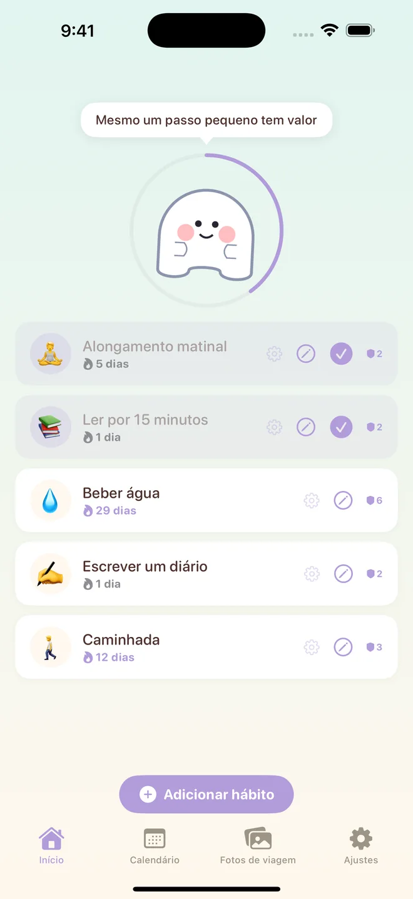
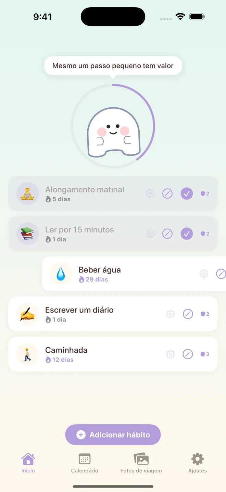
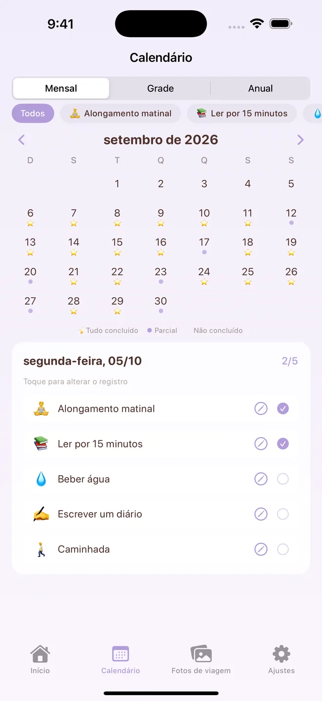

No seu próprio ritmo
Escolha os dias da semana, os lembretes e o horário da virada do dia. Confira também o progresso de hoje no widget da tela de início.
SEUS HÁBITOS. SEU COMPANHEIRO. SUA AVENTURA.
Complete todos os hábitos do dia e ganhe uma foto de viagem. Com Marutto torcendo por você e 250 fotos para descobrir, cada pequeno passo tem uma recompensa.
iPhone e iPad / Grátis com anúncios / Sem conta
Recursos


01 — LITTLE BY LITTLE
Um alongamento. Uma página. Um copo d’água. Comece com algo pequeno: Marutto torce por você.

A SMALL STEP FORWARD
Deslize o cartão para marcar o hábito como concluído. Você também pode desfazer a conclusão ou editar registros anteriores pelo calendário.
Toque para uma pequena conquista
Demonstração do site
Nos dias em que você se esforça e nos que não saem tão bem, Marutto torce por você.
EVERY LITTLE DAY COUNTS
Consulte o calendário mensal, a grade de cada hábito e o histórico anual para ver o que vem construindo a cada dia. Você também pode deixar notas em cada hábito.

02 — A WORLD OF LITTLE REWARDS
fotos de viagem para colecionar


Complete todos os hábitos do dia para ganhar uma foto de viagem. Descubra 250 fotos com os diários de viagem de Marutto e curiosidades. Você também pode assistir a um anúncio em vídeo com recompensa para ganhar uma foto extra.
Abra uma foto de que você goste e use o botão Compartilhar para compartilhar a foto e o diário. O link do app e #MaruttoTracker vão junto.
03 — AT YOUR OWN PACE
Escolha os dias da semana, os lembretes e o horário da virada do dia. Confira também o progresso de hoje no widget da tela de início.
Ganhe um escudo a cada 7 dias seguidos. Você pode ativar ou desativar nos Ajustes a função que protege sua sequência quando esquecer um dia.
Aproveite a interface, as falas de Marutto e os diários de viagem no idioma que preferir.
O download e o uso são gratuitos. O app inclui anúncios e vídeos opcionais para receber fotos de viagem extras.
Não é preciso criar uma conta. Seus registros de hábitos ficam no dispositivo. Para iPhone e iPad com iOS 17 ou posterior.